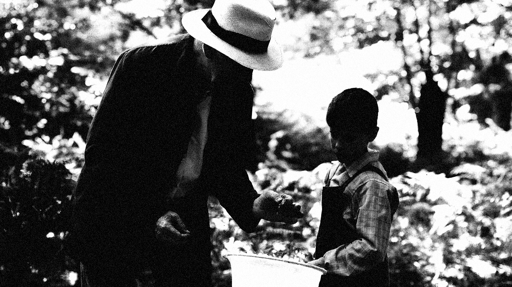

Specimen No. XIV | Written by Maya Lee
The film is set against the backdrop of the Spanish Civil War. Unlike modern Western society, European society around the time of the First World War was extremely conservative, and it was a period when corporal punishment and coercive education were commonplace in schools. When Moncho reached school age, he became frightened after hearing stories from his older brother about the corporal punishment meted out at school. However, Mr Gregorio, the teacher of the class Moncho joined, deliberately avoided imposing a rote-learning approach on his pupils, instead adhering to an educational philosophy that allowed them to discover the truth naturally. Throughout the film, it becomes clear that he holds this educational ideal: rather than shouting to force the chattering pupils into silence once lessons have begun, he allows their voices to subside of their own accord.
Don Gregorio teaches the timid Moncho that a butterfly’s tongue is coiled like a watch spring to reach the heart of a flower. The Mariposa (butterfly's tongue) symbolizes intellectual curiosity and the delicate connection to truth. The butterfly, which flies freely and cross-pollinates, represents Don Gregorio himself—a man who rejected rigid educational and political systems in favor of awakening individual consciousness and respecting free thought.

Don Gregorio is teaching Moncho the wonders of nature by observing a butterfly's tongue.
The latter half of the film depicts the rise of General Franco’s Nationalist forces. As fascism takes hold, those who stood on the opposing side—the Republicans—are captured and executed. While Don Gregorio, a steadfast supporter of Republicanism and freedom, is taken away, Moncho’s father—who originally shared those Republican beliefs—suddenly pivots to support the Nationalists to protect his family’s survival. This starkly reflects the ideological conflicts that plagued countries like Germany, Spain, Italy, and Japan just before World War II.
In the harrowing conclusion, Moncho and his family are forced to hurl insults and stones at the departing Republicans, including Don Gregorio, despite their inner anguish. This scene poignantly reflects the brutal reality of human society, where survival often demands the betrayal of one's own soul. ⁋